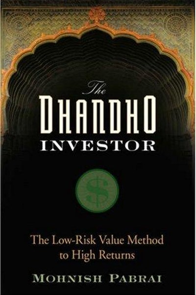

Library › Money & Finance
The Dhandho Investor — Summary & Key Lessons

Low-risk, high-return investing — the Pabrai way.
📖 OPEN THE FULL INTERACTIVE BREAKDOWN →🌐 Read it in Hindi, Hinglish, Gujarati, Tamil & 22 more languages — free, with audio.
💡 The Big Idea
Dhandho is the Gujarati art of business: heads I win, tails I don't lose much. Pabrai applies it to stocks — buy great businesses at prices that make loss unlikely and gain probable, hold patiently, and never pretend to understand what you don't. The book is a practical, humble manual: copy proven frameworks shamelessly, think in probabilities, and let time do the compounding.
🧠 The 7 Key Lessons
Lesson 1: Dhandho — Heads I Win, Tails I Don't Lose Much
The Dhandho Framework
Pabrai's central idea comes from Gujarati business families: make bets where the downside is small and the upside is large. The 80-year-old Patel motel owner who buys a struggling motel cheap, works hard and turns it around is the archetype. The lesson: asymmetric bets compound. In investing, in careers, in startups — the winning move is usually not the boldest but the one where you can't get hurt badly.
📖 Example: Patels built a motel empire by buying run-down properties at low prices with high leverage and sweat — massive upside, limited downside. Read the full example →
⚡ Do this: Review your next big decision and ask: what is the worst-case loss? If it's survivable and the upside is several times larger, it's a Dhandho bet.
Lesson 2: Copy Shamelessly — Learn from Masters
Clone the Masters
Pabrai admits openly: he is a clone of Warren Buffett and Charlie Munger. Instead of inventing his own method, he studied, copied and adapted theirs. The lesson: originality in investing is overrated — proven frameworks are a gift. You don't need a new idea; you need the discipline to execute a good old one. Find a master whose approach fits your temperament and copy it with attribution.
📖 Example: Pabrai's 'clone' portfolio mirrored Buffett's holdings and returned far above market for years — proof that copying well-executed is not cheating. Read the full example →
⚡ Do this: Pick one investor, athlete or operator whose method you admire. Study their framework and write down how you would apply it this quarter.
Lesson 3: Margin of Safety Is the Whole Game
Price and Value
The core of value investing: buy a business for less than it is worth, so that even if you are wrong about some details, you survive. Pabrai's version: a margin of safety turns uncertainty into advantage. The lesson: price is what you pay, value is what you get — and the gap between them is your protection. Buying great things at fair prices is fine; buying good things at great prices is where fortunes are made.
📖 Example: When Pabrai bought a business at half its conservative value, even a 30% valuation error still left him profitable — the margin did the work. Read the full example →
⚡ Do this: Before any purchase or commitment, ask: am I getting more value than I'm paying? If the gap isn't clear, walk away.
Lesson 4: Simple Businesses Win
Stick to What You Understand
Pabrai invests almost exclusively in boring, simple, predictable businesses — insurance, banks, consumer goods — because he can model them. The lesson: your circle of competence is a moat. Fancy industries are not advantages; they are traps for people who don't understand them. Deep knowledge of a plain business beats shallow knowledge of an exciting one, every time.
📖 Example: Pabrai famously said he'd rather understand a lemonade stand deeply than pretend to understand biotech — the lemonade stand is where his edge lives. Read the full example →
⚡ Do this: List the three industries or domains you understand most deeply. When considering an opportunity, ask: is this inside that circle?
Lesson 5: Patience Is the Engine
Time and Compounding
Pabrai's returns look ordinary in any single year; they compound because they don't reverse. The lesson: the investor's real asset is time — not intelligence, not information. Every trade, every panic, every chase of a hot tip breaks the compounding curve. Sitting still is an action. The boring portfolio held for decades beats the brilliant one traded weekly, almost every time.
📖 Example: Buffett's wealth is famously 99% earned after age 50 — not because he got smarter, but because compounding got more time. Read the full example →
⚡ Do this: Pick one long-term investment or skill you keep second-guessing. Decide today to not touch it for 12 months, and set a review date.
Lesson 6: Think in Probabilities, Not Certainties
Probabilistic Thinking
Pabrai thinks like a gambler with an edge: no single bet matters, the portfolio matters. Every investment is a probability — some will fail, and that's priced in. The lesson: don't judge decisions by outcomes (the market can be wrong for years) but by the quality of the reasoning. A good decision can have a bad result; a bad decision can have a lucky result. Judge the process.
📖 Example: Pabrai expected some of his holdings to fail — he sized each bet so that failures were annoying, not fatal, and winners paid for all of them. Read the full example →
⚡ Do this: For your next decision, write your expected probability of success and the size of loss if wrong. Then decide based on expected value, not hope.
Lesson 7: Know What You Don't Know
Intellectual Honesty
Pabrai's edge is not brilliance but honesty: he passes on most opportunities because he refuses to fake understanding. The lesson: the most expensive words in investing are 'this time it's different' and 'I'm sure'. Admit ignorance early — it costs nothing — and wait. The investor who can say 'I don't know' can never be fooled into a permanent loss.
📖 Example: Pabrai's famous restraint — holding cash for years when nothing cheap appeared — protected him from the crashes that destroyed the overconfident. Read the full example →
⚡ Do this: Write down one area where you are currently pretending to know more than you do. Either study it properly or exit the position.
✅ 5-Step Action Plan
- Reframe your next big bet: worst case survivable, upside several times larger?
- Pick one master to clone and write their framework in your own words.
- Before any purchase, verify the gap between price and value.
- Identify your circle of competence and refuse one opportunity outside it.
- Choose one investment or skill to leave untouched for 12 months.
⚠️ When This Doesn't Work
Pabrai's 'heads I win, tails I don't lose much' is the sanest investing framework ever — and Jesse Livermore is the warning about what happens when genius meets the framework's absence: the greatest trader of his era, who understood markets better than anyone, made and lost two fortunes because he never institutionalized the 'don't lose much' part — every bet was his genius against the market, and the market eventually took the genius too. Pabrai's book is about discipline; Livermore is the proof that the discipline, not the intelligence, is the product. The caveat: the smarter you are, the more you need the framework — your confidence is the risk.
💀 The Graveyard Proves It
🐻 Jesse Livermore — The Man Who Won 1929 and Lost Everything Anyway. Burn: $100M (≈ $1.5B today). Read the full case study →
💬 Best Quotes from The Dhandho Investor
- “Heads I win, tails I don't lose much.”
- “The only way to get rich is to not lose money — and the only way to not lose money is to buy businesses with a margin of safety.”
- “Risk comes from not knowing what you're doing.”
Interactive version: mark lessons as read, listen in your language, share quote cards.